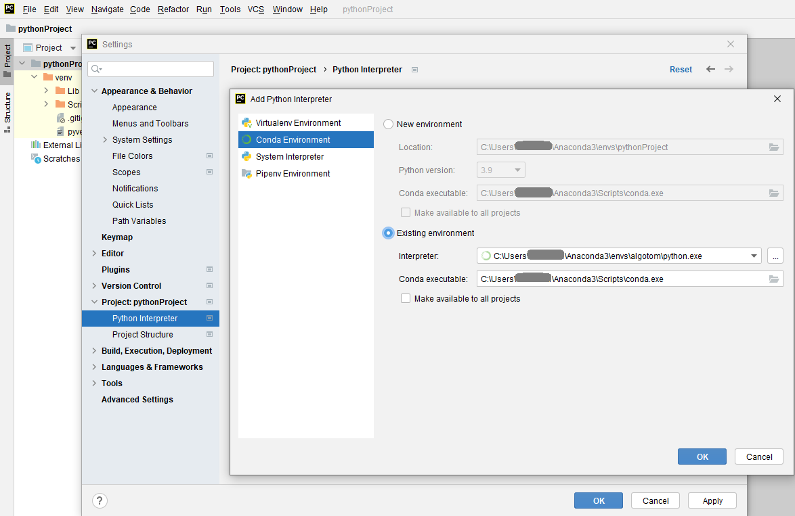

3. Installation
Algotom is installable across operating systems (Windows, Linux, Mac) and works with Python >=3.7. It is a Python library not an app. Users have to write Python codes to process their data. For beginners, a quick way to get started with Python programming is to install Anaconda, then follow instructions here. There are many IDE software can be used to write and run Python codes e.g Spyder, Pydev, Pycharm (Community), or Visual Studio Code. After installing these software, users need to configure Python interpreter by pointing to the installed location of Anaconda. Each software has instructions of how to do that. There is a list of standard Python libraries shipped with Anaconda, known as the base environment. To install a Python package out of the list, it’s a good practice that users should create a separate environment from the base. This tutorial gives an overview about Python environment. Instructions of how to create a new environment and how to install new packages are here and here. The following image shows the screenshot of how to use Anaconda Powershell Prompt to create a new environment and install Algotom.

Note that the IDE software needs to be reconfigured to point to the new environment as shown below.
{kind=link}
If users don’t want to install Anaconda which is quite heavy due to the base environment shipped with it, Miniconda is enough to customize Python environment.
3.1. From source
Clone Algotom from Github repository:
git clone https://github.com/algotom/algotom.git algotom
Download and install Miniconda software, then:
Open Linux terminal or Miniconda/Anaconda Powershell prompt and run the following commands:
conda create -n algotom python>=3.7
conda activate algotom
cd algotom
python setup.py install
3.2. Using conda
Install Miniconda as instructed above, then:
Open Linux terminal or Miniconda/Anaconda Powershell prompt and run the following commands:
If install to an existing environment:
conda install -c algotom algotom
If install to a new environment:
conda create -n algotom python>=3.7
conda activate algotom
conda install -c algotom algotom
Algotom is also installable using the conda-forge channel:
conda install -c conda-forge algotom
3.3. Using pip
Install Miniconda as instructed above, then
Open Linux terminal or Miniconda/Anaconda Powershell prompt and run the following commands:
If install to an existing environment:
pip install algotom
If install to a new environment:
conda create -n algotom python>=3.7
conda activate algotom
pip install algotom
3.4. Notes
To use GPU-enabled functions, users have to make sure that their computers have a NVIDIA GPU and must install CUDA Toolkit. Installing the latest version of CUDA Toolkit (or Python) is not recommended as scientific software often takes time to update.
To compromise between ease-of-installation and performance, GPU-enabled reconstruction functions in Algotom use Numba. Users can use other reconstruction methods; which are optimized for speed such as the gridding reconstruction method in Tomopy or GPU-enabled methods in Astra Toolbox; using Algotom’s wrappers. Making sure that Tomopy and Astra Toolbox are installed before use. Referring to the websites of these packages to know how to install or acknowledge if you use them.